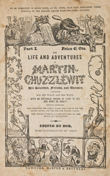

Martin Chuzzlewit has been raised by his grandfather and namesake. Years before, Martin senior took the precaution of raising an orphaned girl, Mary Graham. She is to be his nursemaid, with the understanding that she will be well cared for only as long as Martin senior lives. She thus has strong motivation to promote his well-being, in contrast to his relatives, who only want to inherit his money. However, his grandson Martin falls in love with Mary and wishes to marry her, ruining Martin senior's plans. When Martin refuses to give up the engagement, his grandfather disinherits him.
Martin becomes an apprentice to Seth Pecksniff, a greedy architect. Instead of teaching his students, he lives off their tuition fees and has them do draughting work that he passes off as his own. He has two spoiled daughters, nicknamed Cherry and Merry, having been christened as Charity and Mercy. Unbeknown to Martin, Pecksniff has actually taken him on to establish closer ties with the wealthy grandfather, thinking that this will gain Pecksniff a prominent place in the will.
Young Martin befriends Tom Pinch, a kind-hearted soul whose late grandmother had given Pecksniff all she had, believing Pecksniff would make an architect and gentleman of him. Pinch is incapable of believing any of the bad things others tell him of Pecksniff, and always defends him vociferously. Pinch works for exploitatively low wages, while believing he is the unworthy recipient of Pecksniff's charity.
When Martin senior hears of his grandson's new life, he demands that Pecksniff kick young Martin out. Then, Martin senior moves in and falls under Pecksniff's control. During this time, Pinch falls in love with Mary, but does not declare it, knowing of her attachment to young Martin.
One of Martin senior's greedy relatives is his brother, Anthony Chuzzlewit, who is in business with his son, Jonas. Despite considerable wealth, they live miserly, cruel lives, with Jonas constantly berating his father, eager for the old man to die so he can inherit. Anthony dies abruptly and under suspicious circumstances, leaving his wealth to Jonas. Jonas then woos Cherry, whilst arguing constantly with Merry. He then abruptly declares to Pecksniff that he wants to marry Merry, and jilts Cherry - not without demanding an additional 1,000 pounds on top of the 4,000 that Pecksniff had promised him as Cherry's dowry, with the argument that Cherry has better chances for matchmaking.
Jonas, meanwhile, becomes entangled with the unscrupulous Montague Tigg and joins in his pyramid scheme-like insurance scam. At the beginning of the book he is a petty thief and hanger-on of a Chuzzlewit relative, Chevy Slyme. Tigg cheats young Martin out of a valuable pocket watch and uses the funds to transform himself into a seemingly fine man called "Tigg Montague". This façade convinces investors that he must be an important businessman from whom they may greatly profit. Jonas eventually ends up murdering Tigg, who has acquired some kind of information on him.
At this time, Tom Pinch finally sees his employer's true character. Pinch goes to London to seek employment, and rescues his governess sister Ruth, who he discovers has been mistreated by the family employing her. Pinch quickly receives an ideal job from a mysterious employer, with the help of an equally mysterious Mr. Fips.
Young Martin, meanwhile, has encountered Mark Tapley. Mark is always cheerful, which he decides does not reflect well on him because he is always in happy circumstances and it shows no strength of character to be happy when one has good fortune. He decides he must test his cheerfulness by seeing if he can maintain it in the worst circumstances possible. To this end, he accompanies young Martin when he goes to the United States to seek his fortune. The men attempt to start new lives in a swampy, disease-filled settlement named "Eden", but both nearly die of malaria. Mark finally finds himself in a situation in which it can be considered a virtue to remain in good spirits. The grim experience, and Mark's care nursing Martin back to health, change Martin's selfish and proud character, and the men return to England, where Martin returns penitently to his grandfather. But his grandfather is now under Pecksniff's control and rejects him.
At this point, Martin is reunited with Tom Pinch, who now discovers that his mysterious benefactor is old Martin Chuzzlewit. The older Martin had only been pretending to be in thrall to Pecksniff. Together, the group confront Pecksniff with their knowledge of his true character. They also discover that Jonas murdered Tigg to prevent him from revealing that he had planned to murder Anthony.
Senior Martin now reveals that he was angry at his grandson for becoming engaged to Mary because he had planned to arrange that particular match himself, and felt his glory had been thwarted by them deciding on the plan themselves. He realises the folly of that opinion, and Martin and his grandfather are reconciled. Martin and Mary are married, as are Ruth Pinch and John Westlock, another former student of Pecksniff's. Tom Pinch remains in unrequited love with Mary for the rest of his life, never marrying, and always being a warm companion to Mary and Martin and to Ruth and John.
1844 - Martin Chuzzlewit, adaptation into a stage play at the Queen's Theatre featuring Thomas Manders as Sarah Gamp.
1912 - Martin Chuzzlewit, a silent short film adaptation directed by Oscar Apfel.
1914 - Martin Chuzzlewit, another short film (director and cast unknown) but a print exists in the George Eastman Museum film archive.
1964 - Martin Chuzzlewit, a BBC television thirteen-part series directed by Joan Craft and with screenplay by Constance Cox.
1994 - Martin Chuzzlewit, a BBC television six-part series with screenplay by David Lodge and starring Paul Scofield, Elizabeth Spriggs and Pete Postlethwaite.
2012 - The Mumbai Chuzzlewits, BBC Radio 4 adaptation set in the hot, hectic streets of modern-day Mumbai, India.